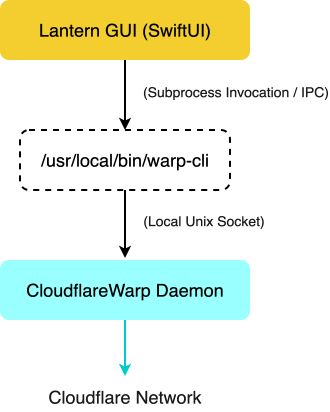

Lantern is a native macOS menu bar application built with SwiftUI that serves as a lightweight, alternative graphical interface for Cloudflare WARP. It acts as a dedicated controller for the underlying warp-cli tool, restoring a streamlined, non-intrusive workflow for managing encrypted network tunnels on macOS.
Core Purpose
The primary objective of Lantern is to eliminate the interface bloat introduced in recent versions of the official Cloudflare WARP macOS application. Rather than opening a large standalone window every time a user interacts with the menu bar icon, Lantern runs strictly in the menu bar. Clicking the icon opens a compact dropdown menu that allows users to toggle connection states, change routing modes, and adjust network preferences without leaving their active workspace.
Technical Architecture
Lantern does not pack or redistribute Cloudflare binaries. Instead, it operates as an orchestration layer on top of a locally installed warp-cli executable.

When an action is triggered in the interface, Lantern executes warp-cli subcommands in the background, parses the standard output or status codes returned by the daemon, and updates the menu bar interface state accordingly.
Key Features and Functionality
- Native Menu Bar Interface: The app stays entirely within the macOS status bar. It uses system-native UI components to ensure low CPU and memory consumption.
- Connection Mode Management: Users can switch seamlessly between standard 1.1.1.1 DNS resolution and full WARP encrypted tunnel mode depending on their privacy requirements.
- Trusted Network Automation: Lantern can monitor the active Wi-Fi SSID. When connected to designated trusted networks, the app can automatically bypass or pause the WARP tunnel.
- Routing and Split Tunneling Controls: Supports custom split tunneling configurations and local domain fallbacks, allowing local network traffic or specific IP ranges to bypass the VPN tunnel while keeping all other traffic encrypted.
- Local Proxy Mode Support: Allows users to toggle WARP's internal proxy server, enabling applications to route traffic through the WARP client on a per-app basis via local port forwarding rather than system-wide tunneling.
- Launch at Login: Option to launch at login automatically.
Prerequisites
Lantern requires warp-cli to be present on your system to perform connection commands.
You can satisfy this requirement in two ways:
- Official Cloudflare WARP App: Keep the official app installed. Lantern will talk directly to its underlying
warp-clibinary. (The official app DOES NOT NEED TO BE RUNNING (yay)). - Standalone
warp-cli: Modified from the original app, with the GUI removed. The tutorial for extracting the cli yourself from the official app is here.
Installation
- Download the latest
.dmgrelease from the Releases section. - Open the
.dmgand dragLantern.appinto your/Applicationsfolder. - First Launch (macOS Gatekeeper): Because this app isn't signed with a $99/year Apple Developer certificate, macOS will block it on first run. To open:
- Go to System Settings > Privacy & Security.
- Scroll down to the security section and click Open Anyway next to the Lantern block notice.
Updates
If you have any feature ideas, please do let me know, and we can work on that swift-ly (pun definitely intended). Plus, if you find any bugs, or memory leaks (I hope not), mention them in the issues panel, and I would love to take a look. Peace!
WhisperLogger is officially running stable. Check out the release page to grab the latest DMG build!